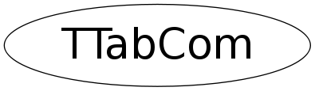

class TTabCom
TTabCom This class performs basic tab completion. You should be able to hit [TAB] to complete a partially typed: username environment variable preprocessor directive pragma filename (with a context-sensitive path) public member function or data member (including base classes) global variable, function, or class name Also, something like someObject->Func([TAB] someObject.Func([TAB] someClass::Func([TAB] someClass var([TAB] new someClass([TAB] will print a list of prototypes for the indicated method or constructor. Current limitations and bugs: 1. you can only use one member access operator at a time. eg, this will work: gROOT->GetListOfG[TAB] but this will not: gROOT->GetListOfGlobals()->Conta[TAB] 2. nothing is guaranteed to work on windows or VMS (for one thing, /bin/env and /etc/passwd are hardcoded) 3. CINT shortcut #2 is deliberately not supported. (using "operator.()" instead of "operator->()") 4. most identifiers (including C++ identifiers, usernames, environment variables, etc) are restriceted to this character set: [_a-zA-Z0-9] therefore, you won't be able to complete things like operator new operator+ etc 5. ~whatever[TAB] always tries to complete a username. use whitespace (~ whatever[TAB]) if you want to complete a global identifier. 6. CINT shortcut #3 is not supported when trying to complete the name of a global object. (it is supported when trying to complete a member of a global object) 7. the list of #pragma's is hardcoded (ie not obtained from the interpreter at runtime) ==> user-defined #pragma's will not be recognized 8. the system include directories are also hardcoded because i don't know how to get them from the interpreter. fons, maybe they should be #ifdef'd for the different sytems? 9. the TabCom.FileIgnore resource is always applied, even if you are not trying to complete a filename. 10. anything in quotes is assumed to be a filename so (among other things) you can't complete a quoted class name: eg, TClass class1( "TDict[TAB] // this won't work... looks for a file in pwd starting with TDict 11. the prototypes tend to omit the word "const" a lot. this is a problem with ROOT or CINT. 12. when listing ambiguous matches, only one column is used, even if there are many completions. 13. anonymous objects are not currently identified so, for example, root> printf( TString([TAB gives an error message instead of listing TString's constructors. (this could be fixed) 14. the routine that adds the "appendage" isn't smart enough to know if it's already there: root> TCanvas::Update() press [TAB] here ^ root> TCanvas::Update()() (this could be fixed) 15. the appendage is only applied if there is exactly 1 match. eg, this root> G__at[TAB] root> G__ateval happens instead of this root> G__at[TAB] root> G__ateval( because there are several overloaded versions of G__ateval(). (this could be fixed)
Function Members (Methods)
public:
private:
| TTabCom(const TTabCom&) | |
| Int_t | Complete(const TRegexp& re, const TSeqCollection* pListOfCandidates, const char* appendage, ostream& out, TString::ECaseCompare cmp = TString::kExact) |
| void | CopyMatch(char* dest, const char* localName, const char* appendage = 0, const char* fullName = 0) const |
| TTabCom::EContext_t | DetermineContext() const |
| TString | DeterminePath(const TString& fileName, const char* defaultPath) const |
| TString | ExtendPath(const char* originalPath, TString newBase) const |
| void | InitPatterns() |
| TClass* | MakeClassFromClassName(const char* className) const |
| TClass* | MakeClassFromVarName(const char* varName, TTabCom::EContext_t& context, int iter = 0) |
| TTabCom& | operator=(const TTabCom&) |
| int | ParseReverse(const char* var_str, int start) |
| void | SetPattern(TTabCom::EContext_t handle, const char* regexp) |
| TClass* | TryMakeClassFromClassName(const char* className) const |
Data Members
public:
private:
| char* | fBuf | initialized by Hook() |
| Int_t | fLastIter | frodo: iteration counter for recursive MakeClassFromVarName |
| unsigned short | fPat[25][1024] | array of patterns |
| const char* | fRegExp[25] | corresponding regular expression plain text |
| Bool_t | fVarIsPointer | frodo: pointer or not flag |
| TSeqCollection* | fpClasses | |
| TSeqCollection* | fpDirectives | |
| TSeqCollection* | fpEnvVars | |
| TSeqCollection* | fpFiles | |
| TSeqCollection* | fpGlobalFuncs | |
| TSeqCollection* | fpGlobals | |
| int* | fpLoc | initialized by Hook() |
| TSeqCollection* | fpNamespaces | Contains the names of namespaces registered in CINT. |
| TSeqCollection* | fpPragmas | |
| TSeqCollection* | fpSysIncFiles | |
| TSeqCollection* | fpUsers |
Class Charts
{kind=link}
{kind=link}
{kind=link}
{kind=link}

Function documentation
const TSeqCollection * GetListOfFilesInPath(const char* path)
"path" should be initialized with a colon separated list of
system directories
const TSeqCollection * GetListOfEnvVars()
Uses "env" (Unix) or "set" (Windows) to get list of environment variables.
Char_t AllAgreeOnChar(int i, const TSeqCollection* pList, Int_t& nGoodStrings)
[static utility function] if all the strings in "*pList" have the same ith character, that character is returned. otherwise 0 is returned. any string "s" for which "ExcludedByFignore(s)" is true will be ignored unless All the strings in "*pList" are "ExcludedByFignore()" in addition, the number of strings which were not "ExcludedByFignore()" is returned in "nGoodStrings".
void AppendListOfFilesInDirectory(const char* dirName, TSeqCollection* pList)
[static utility function] adds a TObjString to "*pList" for each entry found in the system directory "dirName" directories that do not exist are silently ignored.
TString DetermineClass(const char* varName)
Bool_t ExcludedByFignore(TString s)
[static utility function] returns true iff "s" ends with one of the strings listed in the "TabCom.FileIgnore" resource.
TString GetSysIncludePath()
[static utility function] returns a colon-separated string of directories that CINT will search when you call #include<...> returns empty string on failure.
Bool_t IsDirectory(const char* fileName)
[static utility function] calls TSystem::GetPathInfo() to see if "fileName" is a system directory.
TSeqCollection * NewListOfFilesInPath(const char* path)
[static utility function] creates a list containing the full path name for each file in the (colon separated) string "path1" memory is allocated with "new", so whoever calls this function takes responsibility for deleting it.
Bool_t PathIsSpecifiedInFileName(const TString& fileName)
[static utility function] true if "fileName" 1. is an absolute path ("/tmp/a") 2. is a relative path ("../whatever", "./test") 3. starts with user name ("~/mail") 4. starts with an environment variable ("$ROOTSYS/bin")
void NoMsg(Int_t errorLevel)
[static utility function] calling "NoMsg( errorLevel )", sets "gErrorIgnoreLevel" to "errorLevel+1" so that all errors with "level < errorLevel" will be ignored. calling the function with a negative argument (e.g., "NoMsg( -1 )") resets gErrorIgnoreLevel to its previous value.
Int_t Complete(const TRegexp& re, const TSeqCollection* pListOfCandidates, const char* appendage, ostream& out, TString::ECaseCompare cmp = TString::kExact)
[private]
void CopyMatch(char* dest, const char* localName, const char* appendage = 0, const char* fullName = 0) const
[private]
TClass * MakeClassFromClassName(const char* className) const
[private] (does some specific error handling that makes the function unsuitable for general use.) returns a new'd TClass given the name of a class. user must delete. returns 0 in case of error.
TClass * TryMakeClassFromClassName(const char* className) const
Same as above but does not print the error message.
TClass * MakeClassFromVarName(const char* varName, TTabCom::EContext_t& context, int iter = 0)
[private] (does some specific error handling that makes the function unsuitable for general use.) returns a new'd TClass given the name of a variable. user must delete. returns 0 in case of error. if user has operator.() or operator->() backwards, will modify: context, *fpLoc and fBuf. context sensitive behavior.
int ParseReverse(const char* var_str, int start)
Returns the place in the string where to put the \0, starting the search
from "start"
TTabCom()
EContext_t DetermineContext() const